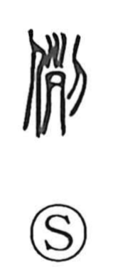

例

Uncategorized
Kun: tatoeru, tatoe, tameshi | On: rei
example ・ instance ・ kind ・ match ・ precedent ・ custom ・ tradition ・ to compare ・ to illustrate
Explanation
例 is a phono-semantic character with 列 as its phonetic guide. 列 originally evoked severed heads aligned in a row; in 例 this alignment becomes the act of setting things in order to form a ritual 'curse barrier' that wards off malign forces. From this image of arranging and making items equivalent arose meanings such as tagui (a kind, an equal) and tameshi (an instance, an example), and later the sense of established patterns like shikitari (tradition) and narawashi (custom). In Japanese it is read tatoeru and rei, familiar from phrases like tatoeba ('for example') and rei no basho ('the usual place').